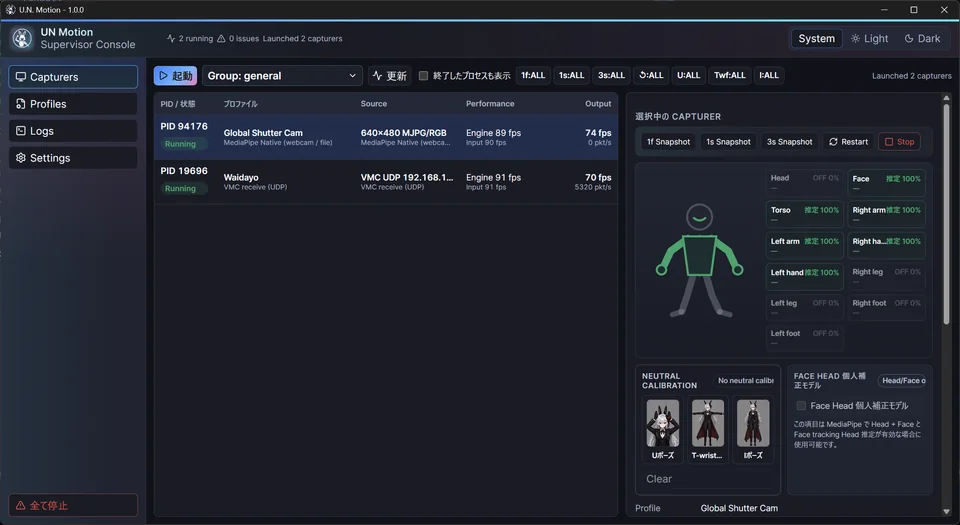

モーションをとるMotion
手や体はWebカメラ、顔は別のトラッカーから。入力ごとにプロファイルを作り、必要な部位を組み合わせられます。
Motionを使い始める ↓Windows x64 ／ モーションキャプチャ
いつものWebカメラで、顔も、指先も、全身も。
あなたの動きを、配信のアバターへ。
手や体はWebカメラ、顔は別のトラッカーから。入力ごとにプロファイルを作り、必要な部位を組み合わせられます。
Motionを使い始める ↓Motionから動きを受け取ったアバターをOBSに表示。配信中に衣装や小物を切り替えて、そのまま次のシーンへ。
Avatarでできること ↗声を字幕にして翻訳する。チャネポ交換でカメラを寄せる。ゲーム画面を見たAI共演者が、声と表情で応える。Flowgraphで使いたい反応を組めます。
Connectでできること ↗un-motion-supervisor.exe を起動。